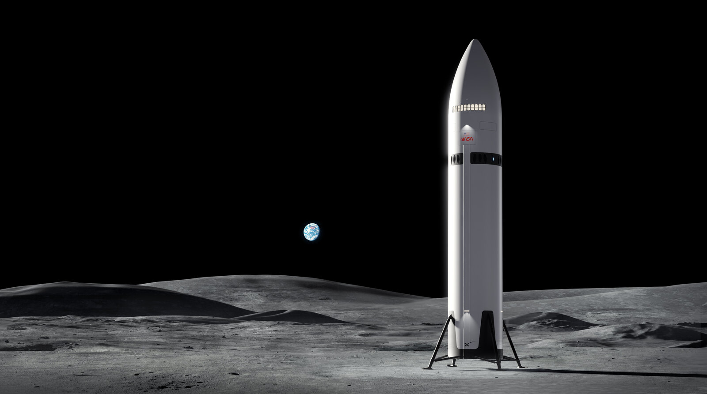
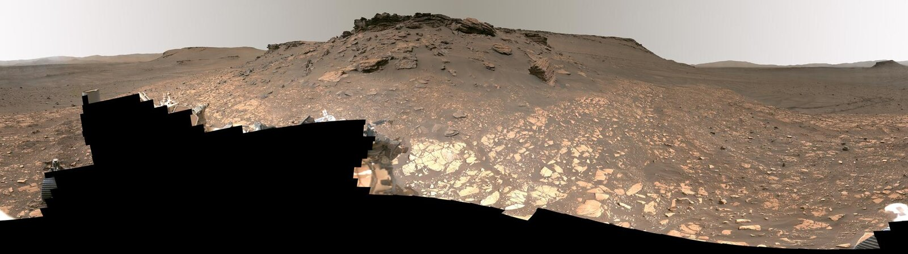

04 / THE NEXT CHAPTER
The horizon keeps moving.
From learning to land to imagining life beyond Earth. Explore the ideas shaping the next chapter.

ARTIST’S CONCEPT · NOT FLIGHT PHOTOGRAPHYDESTINATION / 01
The Moon.
A new beginning.
Returning to the Moon means learning to stay: moving supplies, exploring the surface, and developing the systems that future crews would need.
NASA’s Artemis program brings lunar exploration back into focus. The Starship human landing system is one part of that larger effort.
Design a lunar mission ↗
JEZERO CRATER · MARSDESTINATION / 02
Mars.
A bigger question.
How do you bring people, supplies, and a way home across interplanetary space? Mars makes every engineering problem bigger, from radiation protection to landing heavy cargo.
Human settlement remains an ambition. The challenge is a reason to keep asking better questions, testing ideas, and learning from robotic exploration.
Imagine a Mars mission ↗A QUICK SYSTEMS CHECK
Ready for
your next orbit?
Five questions. One curious mind.
Put your space knowledge to the test.